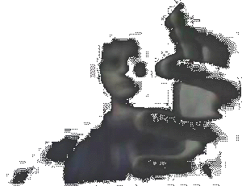
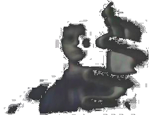

| W | e | c | l | o | m | e | T | o | M | y | M | i | n | d |
|
 |
| brainfood | extendible | locution | extrapolate | oculator | |
|
Real Name: tim st.clair
Nick/Handle:
Occupation:
Previous Job:
Hobbies:
Age Group:
Location:
Email Address:
Favourite Colour:
Favourite All-Time Web Site:
Favourite Celebries: |
General Information: i like to mess around with computers. they intrigue me. i have built two so far: one from the paper up (Z80 based), the other my current pc. i have many types, even ones dating back to before i was born. i still like to pull them out some days and crank up a game, or try to recreate cutting edge programs on them. i also enjoy very much writing - i haven't had anything published yet, but that's not my intention for now. my stories tend to be science fiction and comedic fantasy. my poetry tends to be zen explorations and vaporous thoughts exposed. you can read some of them here on my site - choose 'locution' from the menu. i have a love of electronic music - everything from brian eno at his best to the hardest speedcore to synthetic grooves; right along to extrordinary contempory artists such as bjork and portishead. i would like to be able to create music akin to what i hear, but this skill is not my strongest. i also enjoy the beastie boys, bach, and 'early' music, but not mozart. to download some of my music, choose 'brainfood' from the menu. i particularly like to play around with design. i cannot draw well. indeed, i have difficulty pencilling my name. i enjoy watercolour painting, though i haven't done it for years. some of my digital artworks are displayed online - just choose 'oculator' from the menu. i also create web sites. my dream is to be able to interact with my computer without knowing it. i have been planning ways to realise this dream. for now, i am content with thinking about what is possible. i've tried to document some of my ideas, and form prototype software where possible. you can download this by choosing 'extrapolate' from the menu. if you want to contact me, my preferred method of communcation is of course email. you can email me at frumbert@hotmail.com any time, or if you'd like more information on my designs, other web sites or ways to contact me, please choose the 'extendible' option from the menu. oh, and thanks for having a look at my site - i am most humbled. Idle Thoughts:
|
| |